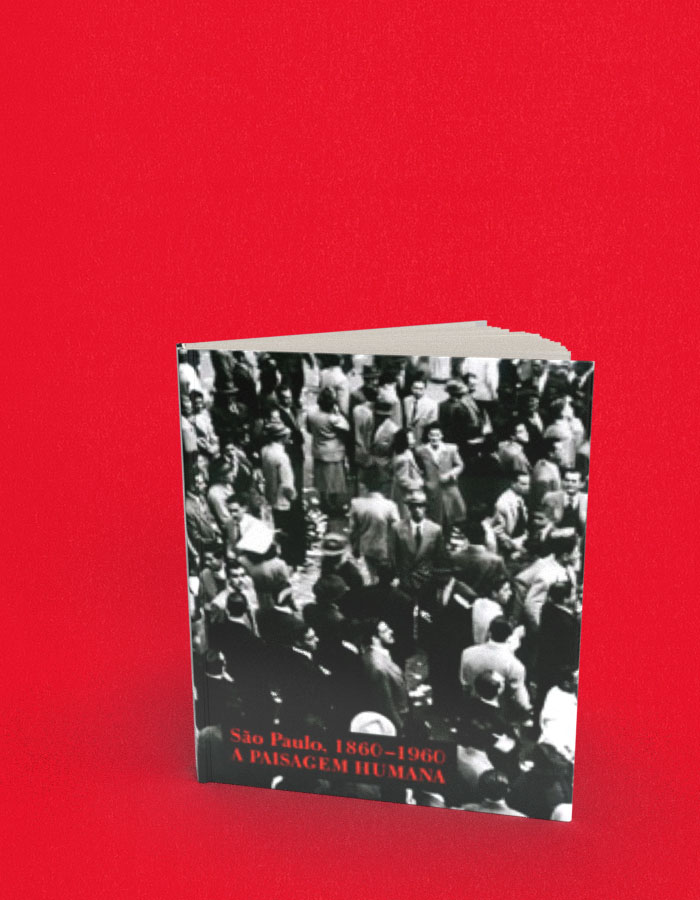

São Paulo 1860-1960 A paisagem humana
A compra acontece no site da livraria, em uma nova aba. Consulte lá os preços e a disponibilidade. Procure pelo título ou ISBN deste livro.
- Autoria / créditos
- Fernando Portela
- Páginas
- 256
- Formato
- 25 x 28 cm
- Acabamento
- capa dura
Sobre o livro
A aventura humana nesta grande metrópole em um século de progresso e grandes transformações: este é o tema deste livro que traz mais de 200 fotos de São Paulo, mostrando, década a década, de 1860 a 1960, as mudanças que ocorriam na cidade. Mostra, por exemplo, desde a população simples com suas carroças na rua, quando São Paulo mais se parecia a uma pequena vila rural, até a cidade efervescente dos revolucionários de 1924 e 1932, das massas humanas nas avenidas durante as comemorações do IV Centenário e da alegria na Copa do mundo de 1954, entre outras cenas surpreendentes.
Fernando Portela é autor de mais de trinta obras, entre ficção, reportagens e livros infantojuvenis. Escreveu sua primeira história aos treze anos e nunca mais deixou de escrevê-las. E enquanto as escrevia, também exerceu as funções de redator de publicidade, repórter de jornal e responsável pela comunicação de empresa multinacional. De 1966 a 2006 esteve ligado ao Jornal da Tarde, de São Paulo, de que foi um dos fundadores e onde foi responsável pelo projetos especiais. No JT, exerceu quase todos os cargos na redação, com destaque para as reportagens especiais.
← Voltar ao catálogo